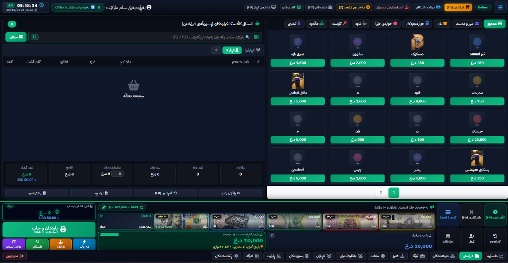
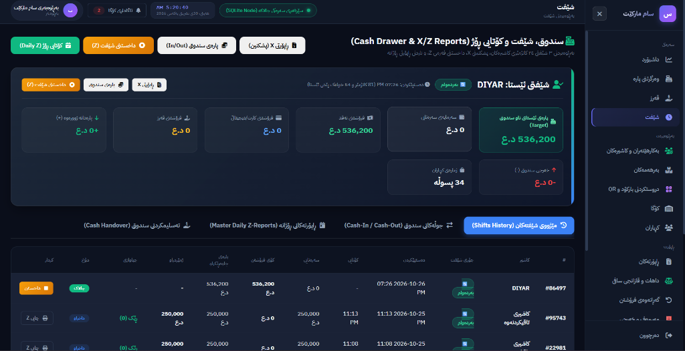
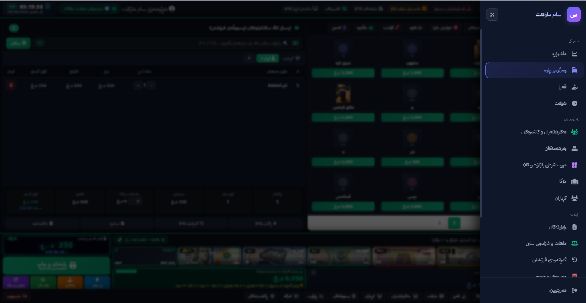

A complete, multi-language point-of-sale system we built together from scratch. Handles cashier operations, shifts, inventory, reports, customer management, and much more — all in a beautiful dark interface with Kurdish, Arabic & English support.

The POS system guides the cashier through a smooth, fast workflow designed for real restaurant and market environments.
These are actual screenshots from the live Smart Serve POS system — showing exactly how the interface looks in Kurdish language mode.
The main POS screen is split into clear zones so the cashier always knows exactly what to do — no training needed.

Full shift tracking so the owner always knows what cash is in the drawer, who sold what, and when every shift opened and closed.

Every section of the system is accessible from a clean side menu. The navigation is grouped into Main, Admin, and Reports sections.
Smart Serve POS is divided into focused sections. Here is every page and what it does.
Every feature designed for the real workflow of a Kurdish restaurant or market.
Smart Serve POS is live and ready. Launch it now from your browser — no install needed for the web version.